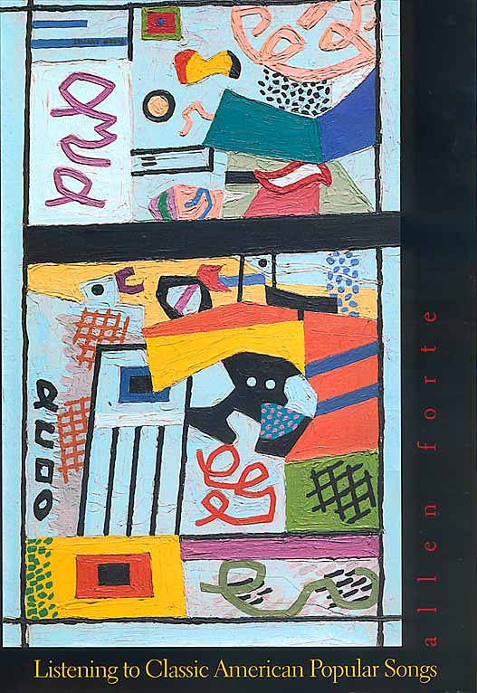

|  |
“...In this book, Allen Forte shares his love of American popular song. He discusses in detail twenty-three songs, ranging from Gershwin's ‘Fascinating Rhythm’ (1924) to Irving Berlin's ‘Steppin’ Out With My Baby’ (1947), guiding readers and listeners toward a deeper appreciation of this vital and engaging music.
“Forte writes for the general reader, assuming no background other than a familiarity with basic music notation. Each song is discussed individually and includes complete lyrics and simple leadsheet. Forte discusses the songs’ distinctive musical features and their sophisticated, often touching and witty lyrics. Readers can follow the music while they listen to the accompanying compact disc, which was specially recorded for this volume by baritone Richard Lalli and pianist-arranger Gary Chapman, with Allen Forte, pianist-arranger for ‘Embraceable You’ and ‘Come Rain Or Come Shine.’”
|